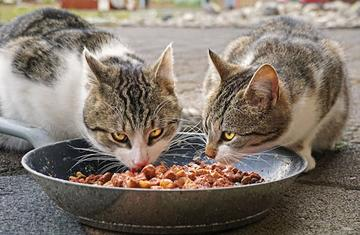
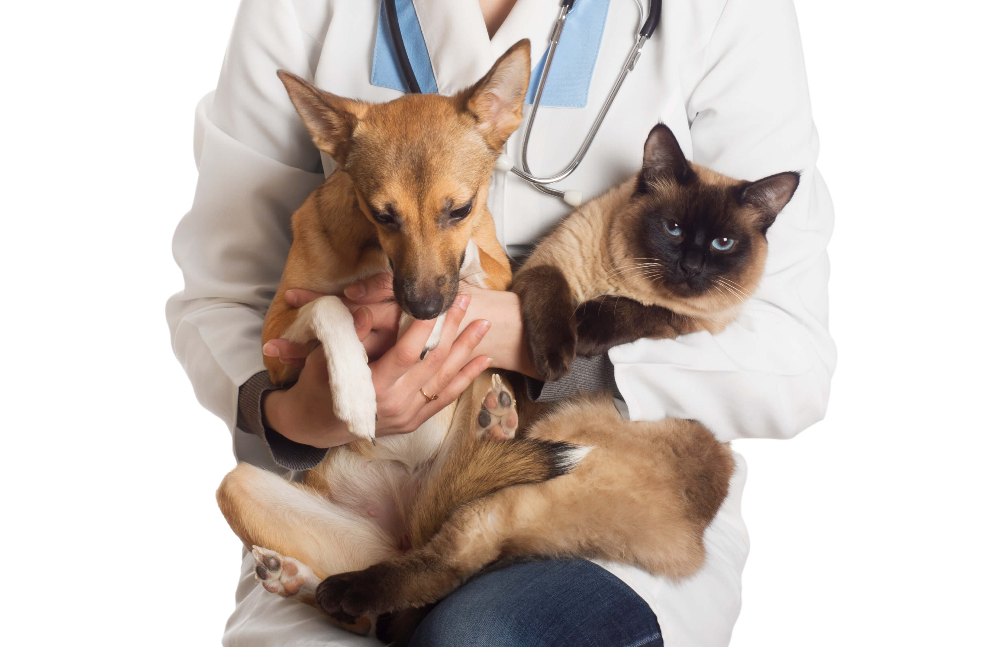
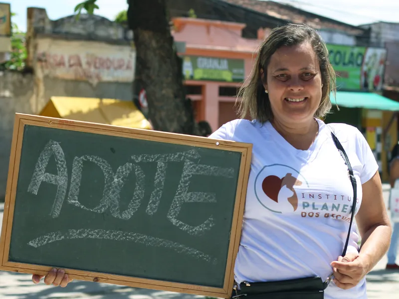

Vacinação

Alimentação saudável


A ONG Planeta dos Bichos surgiu em 2007 em resposta ao grande problema dos animais em situação de rua.
Resgatamos esses animais que sofrem com fome, sede e doenças e damos a eles uma nova oportunidade de vida!
Todos eles passam por consultas e exames clínicos e são doados totalmente saudáveis, após todos os tratamentos
necessários! A estimativa é que aproximadamente 250 animais já tenham sido ajudados pelas nossas ações!
Nosso trabalho inclui:
- Resgate de animais em situação de rua e cuidados necessários;
- Providenciar lares temporários e permanentes para estes animais;
- Divulgação de animais perdidos;
- Realização de Feiras de Adoção de Animais;
- Palestras sobre o trabalho da ONG e projetos educativos sobre maus-tratos aos animais;
Nossa Casa:
Por falta de recursos, a ONG não possui uma sede própria e adequada para os animais. O mesmo espaço é compartilhado por vários animais e por não ter as divisórias necessárias,
apenas um número limitado de cães são permitidos. Assim, à medida que os animais vão sendo adotados, novas vagas surgem e outros podem ser resgatados.
As nossas ações voltadas para os gatos, infelizmente, ainda consistem em auxiliar na castração, busca de lares temporários e tutores responsáveis e exposição em Feiras de Adoção.
Para evitar abandono de animais na nossa porta, não divulgamos nosso endereço publicamente. Contudo, visitas são muito bem-vindas e podem ser agendadas pelos telefones:
Contato da ONG: Ceiça: (73) 99119-2101